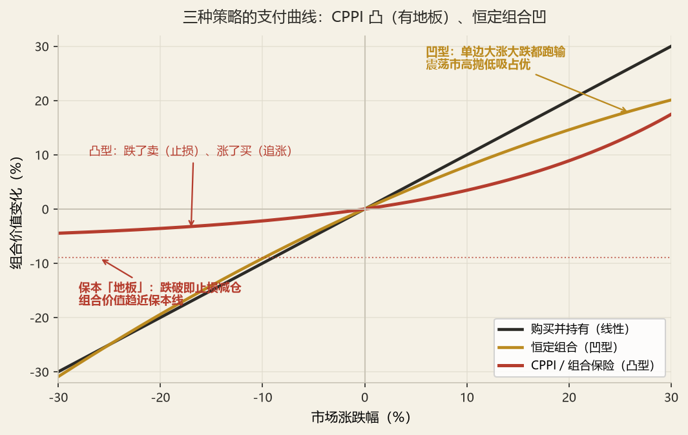

资产组合管理
5.0组合管理的五个环节
组合管理不是「选几只股票」，而是一个闭环流程。2015 年选择题第 7 题就问「资产配置时不需要哪个过程」，考的就是这个流程的完整记忆。
投资政策声明 IPS
明确目标、约束、风险容忍度、时间跨度
资本预期
预测各资产类别的收益、风险、相关性
战略资产配置 SAA
确定长期基准权重（决定 90% 以上的收益波动）
执行与选券
按 SAA 落地为具体证券
监控与再平衡
偏离基准时调回；IPS 变化时重做 SAA
业绩评价与归因
区分「配置赚的」与「选券赚的」
风险监控
VaR、压力测试、限额管理
回到 IPS 复核
目标是否达成？约束是否变化？
被保险的资产配置时，不需要哪个过程（选项含：预测、风险态度、风险函数、优化过程、分配资产等）。
看答案要点
正确区分：需要的过程 = 明确风险态度（IPS）、预测资本预期、按优化结果分配资产。不需要的 = 每次都重跑复杂的风险函数/优化程序（SAA 一旦定好，日常执行只需按权重落地与再平衡，无需重复优化）。
5.1战略资产配置（SAA）
SAA 是「长期、静态、决定性的」配置——它回答了「我的钱长期应该摆在哪几个资产类别里、各占多少」。实证研究一致表明：组合收益波动性的 90% 以上由 SAA 决定，选券与择时只贡献一小部分。
一、SAA 的四个输入与一个输出
输出：一组长期基准权重（如「权益 20%、固收 70%、另类 10%」）
方法：均值-方差优化（马科维茨）→ 结合负债特征修正（对险资是「负债驱动」）
对保险公司的特殊之处：险资的 SAA 不是「最大化夏普比率」那么简单，而是负债驱动——先看负债（久期、现金流、保证利率），再看资产如何匹配。因此险资的 SAA 起点是 ALM，而不是马科维茨。这将在 CH.06 与 ALM 专题展开。
二、SAA 的三种经典模型
| 模型 | 核心思想 | 优点 | 局限 |
|---|---|---|---|
| 均值-方差模型 | 最大化期望效用 U = E − ½Aσ²，选有效边界上的最优点 | 理论基础最完整 | 对输入参数极敏感（垃圾进垃圾出），忽略负债 |
| Black-Litterman | 以市场隐含收益为起点，叠加投资经理的主观观点 | 输出稳定、不极端，融合主观判断 | 观点置信度需人为设定 |
| 负债驱动（LDI / ALM） | 以负债为基准，最小化「资产-负债」缺口的风险 | 最贴合险资/养老金 | 需精确的负债现金流模型 |
① 监管比例关：权益 ≤30%（或按偿付能力分级放宽到 45%）、不动产 ≤30%、其他金融产品 ≤25%、境外 ≤15%（见 CH.01）；
② 偿付能力关：高风险资产的「风险因子」会消耗偿付能力充足率（偿二代），权益 28%–40%、另类更高；
③ 会计利润关：不同资产（公允价值变动 vs 摊余成本）对利润表的影响不同，影响当期利润稳定性。
所以险资的 SAA 本质是一个「多目标约束优化」，而不是单一的马科维茨。
5.2战术资产配置（TAA）与再平衡
SAA 是「长期基准」，TAA 是「短期偏离基准抓机会」。SAA 决定组合的「基因」，TAA 决定组合的「临场发挥」。
SAA：定中枢——长期、静态、决定 90% 收益波动
TAA：做偏离——短期、动态、围绕中枢上下浮动（通常 ±5% ~ ±10%）
判断 TAA 是否有效的三个问题：①你的预测是否比市场准？②偏离的幅度是否足够产生收益又不会突破风险限额？③偏离多久回正（再平衡成本）？
一、三种再平衡策略
| 策略 | 做法 | 适合场景 |
|---|---|---|
| 定期再平衡 | 固定周期（月/季/年）调回基准 | 交易成本高、市场趋势弱 |
| 阈值再平衡 | 偏离超阈值（如 5%）才调回 | 趋势市场（避免频繁反向操作） |
| 恒定混合策略 | 始终维持固定比例 → 涨了卖、跌了买（凹型支付） | 震荡市最优，趋势市受损 |
购买并持有策略、恒定组合策略、投资组合保险策略（CPPI）的描述——什么情况有利、凹凸型支付模式、适合买卖什么证券。
看答案要点
三种策略的「支付曲线形状」是本题的核心：
| 策略 | 做法 | 支付模式 | 有利市场 |
|---|---|---|---|
| 购买并持有 | 买入后不动（不做再平衡） | 线性 | 单边上涨（不卖，吃满涨幅） |
| 恒定组合 | 涨了卖、跌了买（反向操作） | 凹型 | 震荡市（高抛低吸） |
| 组合保险 CPPI | 涨了买、跌了卖（顺势操作） | 凸型 | 趋势市（下跌时止损，上涨时加仓） |
一句话记忆：恒定组合是「反向交易」（凹型，靠波动赚钱），CPPI 是「顺势交易」（凸型，靠趋势赚钱）。

5.3债券组合管理：消极与积极策略
债券组合管理的核心矛盾是「免疫利率风险」还是「主动赚利率的钱」。消极策略追求前者，积极策略追求后者。
一、消极策略：免疫、指数化、现金流匹配
条件（Redington）：PV 匹配 + 久期匹配 + 资产凸度 > 负债凸度（见 CH.04 §4.2）
② 指数化——复制债券指数（因成分债多、流动性差，多用分层抽样而非全复制）
③ 现金流匹配（Dedication）——让每期资产现金流恰好覆盖负债现金流，最彻底但成本最高
三者的递进关系：免疫（只匹配久期，允许现金流错配）→ 指数化（匹配市场，追求跟踪误差最小）→ 现金流匹配（每期现金流精确对应，成本最高）。考试问「区别」时，答出「免疫只看久期、现金流匹配看每期现金流」即可得分。
二、积极策略：赚利率与利差的钱
| 策略 | 操作 | 赚什么钱 | 前提条件 |
|---|---|---|---|
| 利率预期 | 预期利率下降 → 拉长久期（买长期债） | 资本利得 | 预测比市场准 |
| 骑乘收益率曲线 | 买入期限长于持有期的债券，靠「沿曲线滚下」赚取期限溢价 | 期限溢价 + 曲线变平坦 | 曲线向上倾斜且稳定 |
| 利差交易 | 低买高卖信用利差（信用债 vs 国债） | 信用利差收窄 | 信用研究能力 |
| 互换（Swap） | 替代互换、利差互换、税收互换、收益率提升互换 | 定价错误 / 相对价值 | 能识别被错误定价的券 |
债券的积极组合管理方法。
看答案要点
按「两种预测维度」作答最清晰：
维度一 · 预测利率（久期管理）：预期利率下降 → 拉长久期（增加对利率的敏感度）；预期上升 → 缩短久期。
维度二 · 预测利差与相对价值（不赌利率方向）：①骑乘（沿曲线滚动赚期限溢价）；②利差交易（信用债相对国债）；③四种互换（替代互换、利差互换、税收互换、收益率提升互换）；④蝶式/杠铃策略（调整久期分布形状，不改变总久期）。
一个基金面临各种不同债券（给出期限、修正久期、利率变动幅度）。①分析哪种债券合适；②给出两种策略，求不同策略下债券市场价值变化的百分比。
看解题框架
核心：用 ΔP/P ≈ −D*×Δy 算每种债券的价格变动，再判断「哪种更合适」取决于对利率方向的看法。
（1）选券判断：若预期利率下降，选修正久期最大的债券（涨得最多）；若预期上升，选久期最小（跌得最少）或做空久期。
（2）价值变动百分比：直接套 ΔP/P = −D* × Δy。注意 Δy 要带符号（下降为负）。
M 公司养老金固定给付计划，给出三种衍生策略（利率期权 2'、国债期权 2'、国债期货 2'）
看答案要点
三种策略的对冲逻辑（都是对冲养老金负债的利率风险）：
| 策略 | 工具 | 作用 | 要点 |
|---|---|---|---|
| 利率期权 | 利率上限/下限/互换期权 | 为利率波动买「保险」，保留上行收益 | 成本 = 期权费；保留期权价值（Vega） |
| 国债期权 | 国债看跌/看涨期权 | 对冲债券价格波动（利率反向） | 用看跌期权保底，涨了不损失 |
| 国债期货 | 国债期货 | 线性对冲，锁定价格 | 成本最低但放弃收益；用「久期匹配」定对冲数量 |
③ 案例分析：或有免疫（Contingent Immunization，博迪 16.4.3）
这是「固定收益组合构建策略与管理」的经典案例——把消极免疫与积极管理融合的一种混合策略，由利伯维茨（Liebowitz）与温伯格（Weinberger）1982 年提出。
触发点 = 最低可接受终值 / (1 + r)T
（r 为当前市场利率，T 为剩余期限；这个规模如果现在免疫，到期能无风险地滚到最低可接受终值）
某机构管理者持有资产组合现值 1000 万美元，现行利率 10%，剩余期限 2 年。若现在免疫，2 年后可得 1210 万美元；但管理者愿意承担一定风险，只要求「最终价值不低于 1100 万美元」。问：①触发点是多少？②初始可承受多大的风险损失（安全垫）？③策略如何执行？
看完整解答
① 触发点 = 最低可接受终值/(1+r)T = 1100万/(1.10)² = 909 万美元
含义：只要组合价值不低于 909 万，就还有「翻盘」到 1100 万的可能；一旦跌破 909 万，立即免疫。
② 安全垫 = 1000 万 − 909 万 = 91 万美元。这就是管理者可以「赌」的资本——最多亏掉这 91 万。
③ 执行策略：开始积极管理（拉长久期、骑乘、利差交易）。组合价值 > 909 万 → 继续积极；跌至 909 万 → 立即免疫（锁定 10% 复利，确保 2 年后拿到 1100 万）。
5.4权益组合管理：被动、主动与风格
权益组合的核心问题是：市场是否有效？有效 → 被动指数化；无效 → 主动选股。这个判断直接决定了整个权益策略的起点（呼应 CH.03 的 EMH）。
一、被动 vs 主动
| 维度 | 被动（指数化） | 主动管理 |
|---|---|---|
| 理念 | 市场有效，无法持续战胜 | 市场存在可捕捉的无效/异象 |
| 目标 | 跟踪指数，误差最小 | 跑赢基准，产生正 α |
| 成本 | 低（管理费 0.1%–0.5%） | 高（1%–2% + 业绩提成） |
| 跟踪方法 | 全复制 / 抽样 / 优化 | 基本面 / 量化 / 择时 |
| 适用 | 大盘蓝筹、发达市场（更有效） | 小盘、新兴市场、专业领域（更无效） |
二、风格：价值 vs 成长，规模因子
成长股：高增长、高 P/E、低分红——市场预期高增长的股票
Fama-French 三因子：R − rf = α + β(RM−rf) + s·SMB + h·HML
SMB = 小盘 − 大盘（规模因子）；HML = 高账面市值比 − 低（价值因子）
风格轮动的实务含义：价值与成长并非「谁更好」，而是在不同宏观环境与利率环境下轮动。利率上行期成长股承压（远期现金流折现受损大），价值股相对抗跌；利率下行期成长股占优。这对险资的权益风格配置有直接指导意义。
成长股票和价值股票、市场有效性、消极组合。
看答案要点
这条线把三件事串起来：
① 价值与成长的定义（低 P/B、高股息 vs 高增长、高 P/E）；
② 市场有效性与二者的关系：价值溢价（HML 因子）若长期存在，是对 EMH 的挑战之一（或解释为「价值股的额外风险补偿」）；
③ 消极组合的适用：若相信市场（半强式）有效，则应采用消极（指数化）组合，追求 β 而非 α，因为主动管理的 α 在扣除成本后大概率转负。
海外投资分析材料。①指出材料中对指数化投资和积极性投资的有利方面；②具体哪个策略合适，指出原因。
看答案要点
（1）两类投资各自的有利方面
| 策略 | 有利方面 |
|---|---|
| 指数化 | 成本低、分散化好、避免「客场作战」的信息劣势、长期复利稳定 |
| 积极 | 海外市场可能更无效（尤其新兴市场）、存在可捕捉的定价错误、专业能力可产生 α |
（2）选哪个、为什么
标准答案逻辑：取决于目标市场的有效性与自身研究能力。对发达市场（美股、欧债），市场高度有效、且我方无信息优势 → 指数化为主；对新兴市场或特定行业，无效性更强、专业研究可产生 α → 积极管理。结论通常是「核心（发达市场）用指数 + 卫星（新兴/另类）用主动」的核心-卫星结构。
③ 案例分析：险资权益组合的「高股息 + 长期持有」构建
考纲第五部分（四）「权益组合构建策略与管理以及案例分析」。险资的权益组合构建，与公募基金有本质区别——它追求的是「稳定股息 + 低波动 + 低资本占用」。
① 定风格：以「高股息、低波动、稳定 ROE」为核心（银行、公用事业、能源、优质消费），兼顾「科技成长」做卫星
② 定结构：核心（高股息蓝筹 60%–70%）+ 卫星（成长/主题 20%–30%）+ 缓冲（可转债/红利低波 ETF 10%）
③ 定约束：单一股票 ≤5%、FVOCI 分类平滑利润、分红再投资
某寿险公司在 10 年国债收益率 1.85% 的低利率环境下，要构建一个「能覆盖 3.5% 负债成本」的权益组合。请说明「高股息策略」如何实现这一目标，并给出配置逻辑。
看完整解答
核心逻辑：用「股息率 + 股息增长」替代「债券票息」覆盖负债成本。
① 选股标准：股息率 > 3.5%（如银行、煤炭、公用事业、高速、电信），且股息可持续（分红率稳定、现金流充沛、ROE 稳定在 12% 以上）。
② 收益结构：总收益 = 股息率（当期现金流，匹配负债）+ 股息增长（对抗通胀）+ 估值重估（可选）。其中前两项是「确定性的、可覆盖负债成本的」，第三项是「锦上添花」。
③ 会计处理：将高股息股票分类为 FVOCI——股息进当期损益（贡献稳定利润），股价波动进其他综合收益（不扰动利润表），实现「拿股息、稳利润、缓波动」。
④ 监管红利：《保险公司资产负债管理办法》（2026）要求「净投资收益覆盖率 ≥100%」，高股息资产（股息 = 净投资收益）恰好是提升净投资收益覆盖率的最优工具；且偿二代下「长期持有权益」可享受风险因子优惠。
④ 进阶：Treynor-Black 积极组合管理模型（博迪第 27 章）
核心思想：对每个被分析证券，用「评估比率（Appraisal Ratio）= αi / σ²(ei)」衡量其「单位非系统风险带来的 α」，据此确定主动组合的权重。
主动组合权重：wi ∝ αi / σ²(ei) （α 越高、非系统风险越小，权重越大）
最优风险预算：主动组合的配置比例 ∝ [αA/σ²(eA)] ÷ [E(rM)−rf]/σM²
为什么重要：它回答了「如果我有选股能力，应该投多少给主动、多少给被动」——答案取决于「α 的质量」（α 越高、越确定，主动越多）。这从理论上证明了「没有可靠 α 时，被动才是最优」，呼应 CH.03 的 EMH。
5.5保本策略：CPPI 与组合保险
保本策略回答一个实际问题：「如何保证本金安全，又不错过上涨机会？」这是保险公司（投连险、分红险、万能险）、养老金、结构性产品都要面对的问题。
一、两种保本方法
保本额现值 PV(K) 买零息债，剩余部分买看涨期权（或股票 + 看跌期权）
→ 由平价关系，两者等价；成本 = 期权费
② 动态组合保险（CPPI，恒定比例）：
缓冲垫（Cushion）= 组合价值 − 保本额现值
风险资产投资额 E = m × Cushion（m 为乘数，通常 2~6）
剩余买无风险资产 → 随市场动态调整，越涨越买风险资产、越跌越卖
CPPI 的凸型支付（呼应 5.2 节）：市场上涨 → 组合增值 → 缓冲垫变大 → 风险资产投资额 E 变大 → 进一步上涨时收益更多（越涨越买）。市场下跌 → 缓冲垫缩水 → 减仓风险资产 → 保底。这是「跌了卖」，与恒定混合的「跌了买」相反。
资产管理公司代理客户管理 1 亿美元资产，承诺投资收益率下限为 0%（保本）。股票组合标准差 25%、国债利率 5%。①承诺保本应收取多少管理费（看跌期权价值）？②多少钱买股票、多少钱买国债？③未来一天损失达某值（给标准正态分布函数值）。
看解题框架
（1）保本的管理费 = 看涨期权的价值
1 亿美元保本 → 先买国债锁定 1 亿的现值：国债 = 1 亿/(1.05)T。
剩余资金全部买「股票的看涨期权」（执行价 = 保本额）。这份看涨期权的价值，就是客户应付的「保本费用」——它等于 B-S 公式的 C₀（执行价 K = 保本额、期限 T、σ = 25%、r = 5%、S₀ = 当前指数）。
（2）股票与国债的分配（OBPI 视角）
国债 = PV(保本额) = 1 亿/(1.05)T；股票（或等价风险敞口）= 1 亿 − 国债。
若用「股票 + 看跌期权」视角：全买股票（1 亿），同时买 1 亿名义的看跌期权（执行价 = 保本额）。两种表述由平价关系等价。
（3）一天的 VaR（给正态分布分位点）
股票日波动率 = 25% / √252 ≈ 1.575%。
组合中股票部分价值 V 的 1 日 VaR = V × σ日 × zα（zα 为标准正态分位点，如 95% 对应 1.645、99% 对应 2.326）。
VaR = V × 1.575% × zα，代入题目给的分位点即可。
保费 = PV(保本额) + 看涨期权费 （OBPI）
= 股票现价 + 看跌期权费 （等价表述）
= 账户价值 × [1 − m] 中的缓冲垫逻辑 （CPPI 动态近似）
5.6风险管理：VaR、CVaR 与一致性测度
组合管理的另一半是「控制下行」。这一节回答「我最多会亏多少？」——这是监管、董事会、客户都会问的第一个问题。
一、VaR 与 CVaR
VaRα = 使得 P(损失 ≤ VaR) = α 的阈值
参数法（正态假设）：VaRα = −(μ − zα·σ) × V ≈ zα·σ·V
z95% = 1.645，z99% = 2.326
CVaR / ES（条件在险价值 / 期望损失）：
CVaRα = E[损失 | 损失 > VaRα] （超过 VaR 的那部分损失的期望）
VaR 的三个算法：①历史模拟法（用历史收益分布直接取分位点，不需假设）；②参数法（假设正态，快但不准）；③蒙特卡洛（模拟，最灵活最慢）。考试问「三法对比」时按「假设 / 速度 / 准确性」三个维度答。
二、一致性风险测度（Coherent Risk Measure）
③正齐次性（ρ(λX) = λρ(X)） ④平移不变性（ρ(X+c) = ρ(X) − c）
结论：CVaR 满足全部四公理（一致）；VaR 不满足次可加性（非一致）。
2014 年客观题 19 考「一致性风险测度」：核心考点就是「VaR 不满足次可加性，CVaR 满足」。因为两个组合合并后，VaR 可能大于各自 VaR 之和（肥尾、非线性时），这违背「分散化不增加风险」的直觉；而 CVaR 是条件期望，天然满足次可加。
在险价值 VaR；一致性风险测度。
看答案要点
VaR 的定义与三个算法（历史模拟 / 参数法 / 蒙特卡洛）。
一致性风险测度的四公理：单调性、次可加性、正齐次性、平移不变性。
核心结论：VaR 不是一致性测度（不满足次可加性），CVaR（ES）是。所以监管在「偿二代 / 巴塞尔」中越来越倾向用 CVaR。
5.7业绩评价：四大比率与 Brinson 归因
组合管得好不好，不能只看「赚了多少」，要看「承担了多少风险赚的」以及「赚的是配置的钱还是选券的钱」。这是本章与真题结合最密的一节。
一、四大风险调整绩效比率
② 特雷诺比率（Treynor）：Tp = [E(rp) − rf] / βp （分母：系统风险）
③ 詹森 α（Jensen）：αp = E(rp) − [rf + βp(E(rM) − rf)] （超额收益）
④ 信息比率（Information Ratio）：IR = αp / σ(αp) = 主动收益 / 跟踪误差
IR 衡量「相对基准的主动管理能力」，σ(α) 是主动收益的波动（跟踪误差）
关键辨析：Sharpe 用 σ（总风险），Treynor 用 β（系统风险）。若组合是「全部资产」用 Sharpe，若组合是「大组合中的一个部分」用 Treynor。这也是 2015 年大题 37「两个排名不一致」的标准答案。
两家公司的投资收益与风险、市场数据给出。①分别求两家的夏普比率和特雷诺测度；②两种指标排名不一致，解释原因。
看解题框架
（1）计算：S = (R − rf)/σ，T = (R − rf)/β。直接套。
（2）排名不一致的原因（标准答案三点）
| 原因 | 机制 |
|---|---|
| 总风险 ≠ 系统风险 | Sharpe 用 σ（含非系统风险），Treynor 用 β（只含系统风险）。若组合高度集中、非系统风险大，σ 大而 β 相对小 → Sharpe 低、Treynor 高，排名背离 |
| 是否已充分分散 | Treynor 假设组合已分散（非系统风险可被消除），未分散的组合用 Treynor 会高估 |
| 评价目的 | 若组合是投资者的「全部资产」用 Sharpe；若是「组合的一部分」用 Treynor。二者回答不同的问题，排名自然可能不同 |
投资组合业绩来源分析。
看答案要点
业绩的三个来源（这是「业绩归因」的骨架）：
① 资产配置（SAA/TAA）：超配/低配某类资产带来的收益；
② 证券选择：在每类资产内部，选对证券带来的收益；
③ 市场整体（β）：基准本身涨跌带来的被动收益。前两者是「主动收益」，第三者是「被动收益」。
二、Brinson 业绩归因模型
= Σ wBi(Rpi − RBi) （选择贡献：基准权重 × 类内超额）
+ Σ (wpi − wBi)RBi （配置贡献：权重偏离 × 基准收益）
+ Σ (wpi − wBi)(Rpi − RBi) （交互项，通常并入选择或单列）
w 为资产类别权重，R 为收益率；下标 p = 组合，B = 基准
口诀：「选择贡献 = 基准权重配类内超额；配置贡献 = 权重偏离配基准收益」。两个乘积搞清楚「谁固定、谁偏离」，就不会错。
给出几个国家的证券收益率、权重、某基准的收益率、权重。①计算整体业绩水平的贡献；②资产配置的贡献；③证券选择的贡献，并验证两者相加 = 总贡献。
看完整解题框架
（1）总超额收益：Rp − RB = ΣwpiRpi − ΣwBiRBi
（2）配置贡献：Σ (wpi − wBi) × RBi（用基准收益衡量「配置偏了多少钱」）
（3）选择贡献：Σ wBi × (Rpi − RBi)（用基准权重衡量「选券多赚了多少」）
（4）验证：配置 + 选择 + 交互项 = 总超额。若题目要求「两者相加 = 总贡献」，则把交互项并入选择贡献（或题目设计成交互项为 0）。
| 国家/资产 | 组合权重 wp | 基准权重 wB | 组合收益 Rp | 基准收益 RB | 配置贡献 | 选择贡献 |
|---|---|---|---|---|---|---|
| （示例行） | 0.50 | 0.40 | 12% | 10% | (0.50−0.40)×10%=1.0% | 0.40×(12%−10%)=0.8% |
给出两个组合资产的期望回报。①求整个组合的超额收益率；②对每类资产分别分析资产配置和证券选择能力；③如果资产配置中增加权益类投资，现在大概处于什么经济周期？
看解题框架
（1）（2）同 Brinson 三步（见上）。
（3）经济周期与资产配置（这是「超越考试」的宏观判断）
| 经济周期 | 特征 | 利好资产 | 权益配置倾向 |
|---|---|---|---|
| 衰退 | 增长放缓、通胀下行 | 债券（利率下行）、防御性股票 | 低配权益 |
| 复苏 | 增长回升、通胀低位 | 权益（尤其周期/小盘） | 增配权益 |
| 过热 | 增长高、通胀上行 | 商品、价值股、抗通胀资产 | 中性偏防御 |
| 滞胀 | 增长停滞 + 高通胀 | 现金、商品、黄金、短久期债券 | 低配权益 |
「增加权益配置」→ 大概率处于「复苏期」（增长回升、企业盈利改善、估值修复）。答题时结合「美林时钟」逻辑即可。
①计算一组资产标准差（三个标的：固收、权益、其他）；②该资产负债风险特征，从风险、成本收益、久期流动性方面评价；③若经济进入滞胀，固收和权益的走势如何？应偏向哪个资产？
看解题框架
（1）组合标准差：σp² = Σwi²σi² + 2Σi<jwiwjρijσiσj（三资产 3 项方差 + 3 项协方差，见 CH.03 §3.2）。
（2）资产负债风险特征评价（四维）
① 风险：权益占比决定 σ 上限，固收决定利率风险，另类决定流动性风险；② 成本收益：权益高收益高波动，固收低收益稳，另类流动性溢价；③ 久期：固收久期 vs 负债久期的缺口；④ 流动性：另类流动性差，需匹配负债的流动性需求。
（3）滞胀下的走势与选择
滞胀 = 增长停滞 + 高通胀 → 固收：名义利率上行、价格下跌（利空），尤其长久期；权益：盈利受滞、估值受高利率压制（利空）。
应偏向：短久期固收 + 现金 + 抗通胀资产（商品/黄金/通胀挂钩债），低配长久期债与权益。
5.8演算器
VaR 与 CVaR（参数法，正态假设）
Brinson 业绩归因（两类资产示例）
Roy's Safety-First（安全第一准则）
5.9核心答案速查
| 考点问题 | 核心答案 |
|---|---|
| 组合收益波动由谁决定 | SAA 决定 90% 以上，选券与择时贡献很小 |
| SAA vs TAA | SAA 定长期中枢；TAA 短期偏离（±5%~10%） |
| 免疫三条件 | PV 匹配 + 久期匹配 + 资产凸度 > 负债凸度 |
| 现金流匹配 vs 免疫 | 免疫只看久期；现金流匹配每期现金流精确对应 |
| 债券积极策略两来源 | 预测利率方向（久期）+ 识别相对价值（利差） |
| 骑乘策略 | 买入期限长于持有期，沿曲线滚动赚期限溢价 |
| 恒定混合 vs CPPI 支付形状 | 恒定混合凹型（反向交易）；CPPI 凸型（顺势交易） |
| CPPI 公式 | 缓冲垫 = 组合 − 保本额现值；风险资产 = m × 缓冲垫 |
| 保本产品定价 | PV(保本额) + 看涨期权费（OBPI 视角） |
| VaR 三个算法 | 历史模拟、参数法、蒙特卡洛 |
| VaR 是否一致测度 | 否（不满足次可加性）；CVaR 是 |
| Sharpe vs Treynor 分母 | Sharpe 用 σ（总风险）；Treynor 用 β（系统风险） |
| 信息比率 | IR = 主动收益 / 跟踪误差 |
| Brinson 配置贡献 | Σ(wp−wB)×RB（用基准收益） |
| Brinson 选择贡献 | ΣwB×(Rp−RB)（用基准权重） |
| Roy's Safety-First | SFRatio = [E(r)−RL]/σ，选最大者 |
| 美林时钟四象限 | 衰退债券、复苏股票、过热商品、滞胀现金 |
5.10教材深挖与易错辨析
深挖一：为什么「SAA 决定 90% 收益」这句话对险资尤其成立
经典实证结论
Brinson、Hood、Beebower（1986）与后来的研究都指向同一个结论：组合收益的横截面差异，绝大部分（约 90%）由资产配置（SAA）解释，选券与择时只贡献约 10%。
对保险资金的「三重放大」
放大一 · 负债约束把 SAA 锁得更死。险资的 SAA 由 ALM 决定，不是想调就能调。一旦锁定「权益 20%」，择时空间天然被挤压到很小。
放大二 · 长钱属性使「择时」更难且更没必要。公募基金还能靠短期择时搏排名，险资的考核周期是 5–10 年，短期的 β 波动会被时间熨平。对长钱而言，SAA 正确远比任何一次择时重要。
放大三 · 规模决定「选券」的边际收益递减。万亿级资金无法像小基金一样靠个股 α 提升整体收益——α 会被规模摊薄。因此超大型险资的收益天花板，本质上由 SAA 框定。
深挖二：VaR 与「偿二代」的关系——风险度量的监管落地
从 VaR 到「最低资本」
VaR 是「在险价值」，偿二代要求保险公司为各类风险计提最低资本。二者的逻辑同源：都是「给风险留出足够的缓冲」。
偿二代的「市场风险最低资本」本质上是一个 99.5% 置信度、一年期的风险度量（对应欧盟 Solvency II 的 99.5% VaR）。这比巴塞尔银行监管的 99% 更保守，因为保险负债的期限更长、尾部更厚。
为什么监管越来越倾向 CVaR / 情景
① VaR 看不到尾部：99.5% VaR 告诉你「99.5% 情况下损失不超过 X」，但不告诉你「剩下 0.5% 会多惨」；
② 次可加性失效：VaR 不满足次可加性，导致「分别计量各子组合风险再相加」会低估整体风险，监管框架难以自洽；
③ 情景法更直观：压力测试（如「利率+200BP + 股市−30%」）直接给出净资产变化，董事会与监管都能读懂。
从左到右，越来越「面向尾部」、越来越「面向极端」。
深挖三：CPPI、OBPI 与保险产品的「保本」到底差在哪
三种保本的实现路径
| 方法 | 工具 | 成本 | 确定性 | 缺点 |
|---|---|---|---|---|
| OBPI | 真实期权（买看跌/看涨） | 期权费（明确） | 高（合同锁定） | 成本高、长期期权流动性差 |
| CPPI | 动态调仓（复制期权） | 交易成本 + 缺口风险 | 中（依赖连续调仓） | 急跌可能击穿保本线 |
| 保险公司保证 | 资产端收益 + 准备金缓冲 | 利差 + 资本占用 | 高（法律承诺） | 需匹配资产、占用资本 |
本质区别（答题金句）
OBPI 与 CPPI 是「投资组合层面」的保本，靠的是「资产结构」；保险公司的保证利率是「负债层面」的保本，靠的是「合同承诺 + 监管资本 + 准备金」。前者风险自担、成本显性；后者风险由公司整体信用背书、成本隐性（利差损 + 资本占用）。
这也解释了为什么监管对「承诺保证收益的产品」要求更高资本——因为保证收益 = 卖出看跌期权，而期权需要资本金来「接得住」。
五个高频易错点
5.11自测
- A. 市场上涨时应减少风险资产头寸
- B. 市场下跌时应增加风险资产头寸
- C. CPPI 的支付曲线是凹型的
- D. CPPI 中风险资产投资额 = 乘数 × 缓冲垫
看答案与解析
答案：D。
A 错（上涨应增加头寸，因缓冲垫变大）；B 错（下跌应减少头寸保底）；C 错（CPPI 是凸型）；D 对（E = m × Cushion）。
- A. 方差
- B. VaR
- C. CVaR（ES）
- D. 标准差
看答案与解析
答案：C。
CVaR 满足单调性、次可加性、正齐次性、平移不变性。VaR 不满足次可加性；方差/标准差不满足单调性与平移不变性。
看答案与解析
Rp = 0.6×12% + 0.4×6% = 9.6%；RB = 0.5×10% + 0.5×5% = 7.5%
① 总超额 = 9.6% − 7.5% = 2.1%
② 配置贡献 = (0.6−0.5)×10% + (0.4−0.5)×5% = 1.0% − 0.5% = 0.5%
③ 选择贡献 = 0.5×(12%−10%) + 0.5×(6%−5%) = 1.0% + 0.5% = 1.5%
交互项 = (0.6−0.5)(12%−10%) + (0.4−0.5)(6%−5%) = 0.2% − 0.1% = 0.1%
验证：0.5% + 1.5% + 0.1% = 2.1% = 总超额 ✓
看答案与解析
诊断：负债久期 15 > 资产久期 8，存在正久期缺口。利率下行时，负债增加额超过资产增加额，净资产受损（利差损风险）。
方案一 · 拉长资产久期：配置超长期国债、长久期非标、利率互换（收固定付浮动）。原理：提升 DA 缩小缺口。
方案二 · 缩短负债久期：发展期缴短险、降低保证利率刚性、开发分红险（浮动负债）。原理：降低 DL。
方案三 · 利率对冲工具：买入利率下限（为浮动资产保底）、国债期货对冲、利率互换。原理：直接用衍生品对冲利率风险。